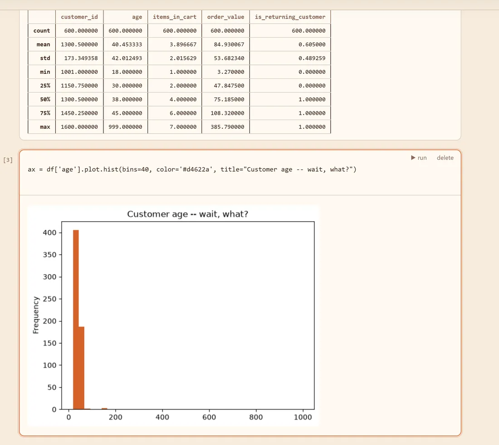
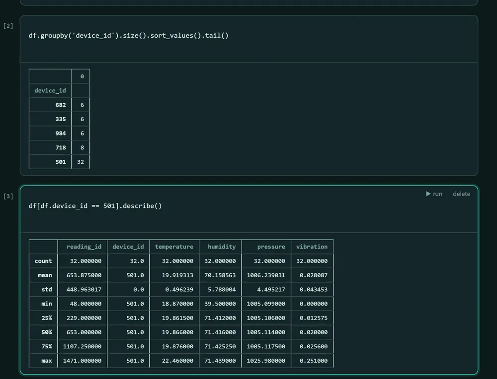
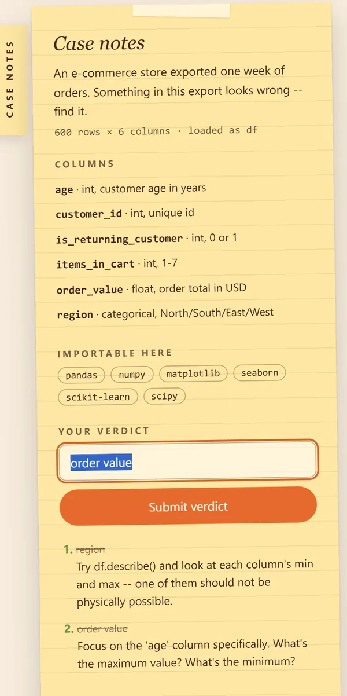
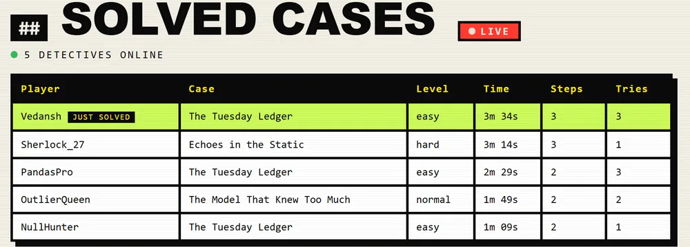
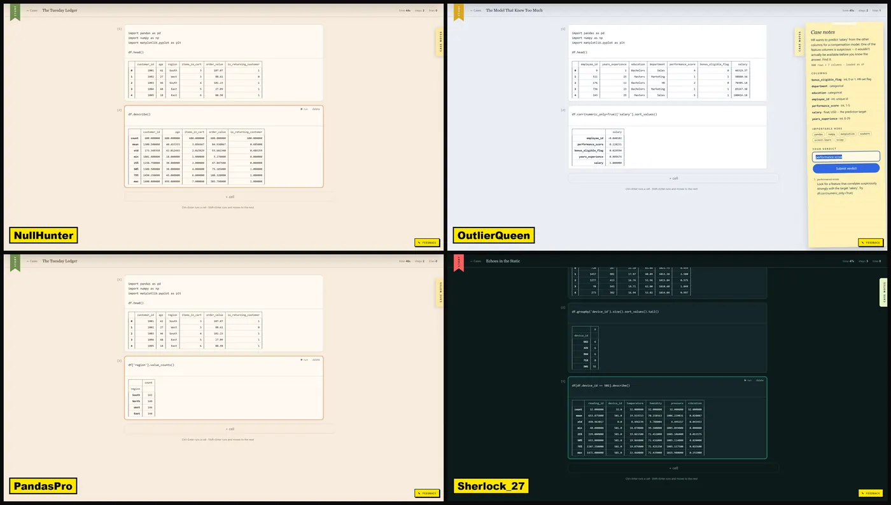

One bad value
One value that can't be true. Summary statistics will get you far.
Case file 001 · Plays in your browser
Write real Python against real data. Find the one lie. Beat the clock.

df['age'].max() → 99901 How a case goes
Every case is a short story with a dataset attached. A yarn shop's weekly orders. A Mars orbiter that keeps arriving low. Somewhere in the data, one thing has been planted.
A live Python notebook opens right in the tab, with pandas, numpy, matplotlib and scikit-learn ready to go. Describe it, plot it, group it. The clock is running.
Type your verdict. A wrong guess doesn't end the case, it gets you a sharper hint. Fewer tries and a faster time mean a better score.


02 The archive
Each case hides exactly one thing. How hard it is to see depends on the level.
One value that can't be true. Summary statistics will get you far.
One feature that shouldn't exist. Think about what a model is allowed to know.
One pattern spread across columns. Looking at one column at a time won't be enough.
03 Based on true stories
Some of our cases are built on data mistakes that really happened. We changed the names and kept the mistakes.
Gene symbols like SEPT2 got auto-converted into dates, and the damage slipped into published supplementary files. Ziemann et al., 2016
One team's software worked in pound-force seconds. The other expected newton-seconds. Nobody caught it until the spacecraft was gone. Mars Climate Orbiter, 1999
The overall numbers looked biased against women. Split by department, the picture flipped. A textbook case of Simpson's paradox. UC Berkeley, 1973
04 Modes
Same data and same clock for everyone, with a leaderboard that belongs to that week alone. Come back Monday and it resets.

Share a join code and everyone gets the same case. The live board fills in as people crack it, and you'll get a heads-up every time a rival beats you to it.

Once you close a case, you can open other players' notebooks. The dead ends, the clever one-liners, the plot that gave it away.
Use our master prompt to turn your own story and dataset into a case. Keep it to yourself, or send the link to a friend and watch them squirm.
This is what a right answer feels like.
05 For educators & hiring
Most data courses hand students a clean CSV and a question with a known answer. Real data is messier than that. ML Detective gives people practice at the part that actually matters on the job: noticing when something is off.
Join the waitlistWe're starting with a small group of teachers and teams.
Run one case with the whole section and put the live board on the projector.
Pick the case and the level that fit this week's lecture. Students see their own score, you see everyone's.
Watch how a candidate works through messy data in a real notebook, against a clock. Much harder to fake than a quiz.
06 FAQ
No. Python runs right in your browser. Open the page, pick a case and start typing.
The core cases are free to play.
Basic pandas. If you can load a dataframe, run describe() and filter some rows, you can close an Easy case. The harder levels will teach you the rest.
Yes. Upload lets you write a case with our master prompt, then play it privately or share a link.
Your code runs on your own device. Your notebooks only show up in Scout if you choose to share them.
Free to start. Runs in your browser.